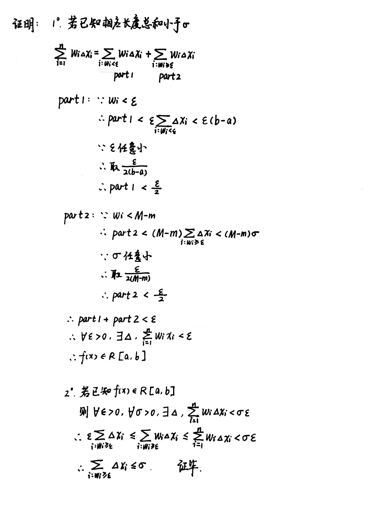
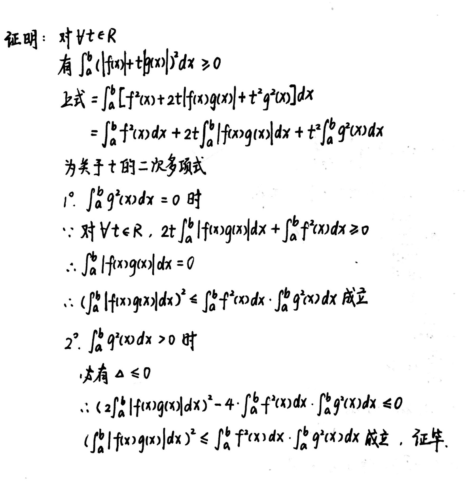
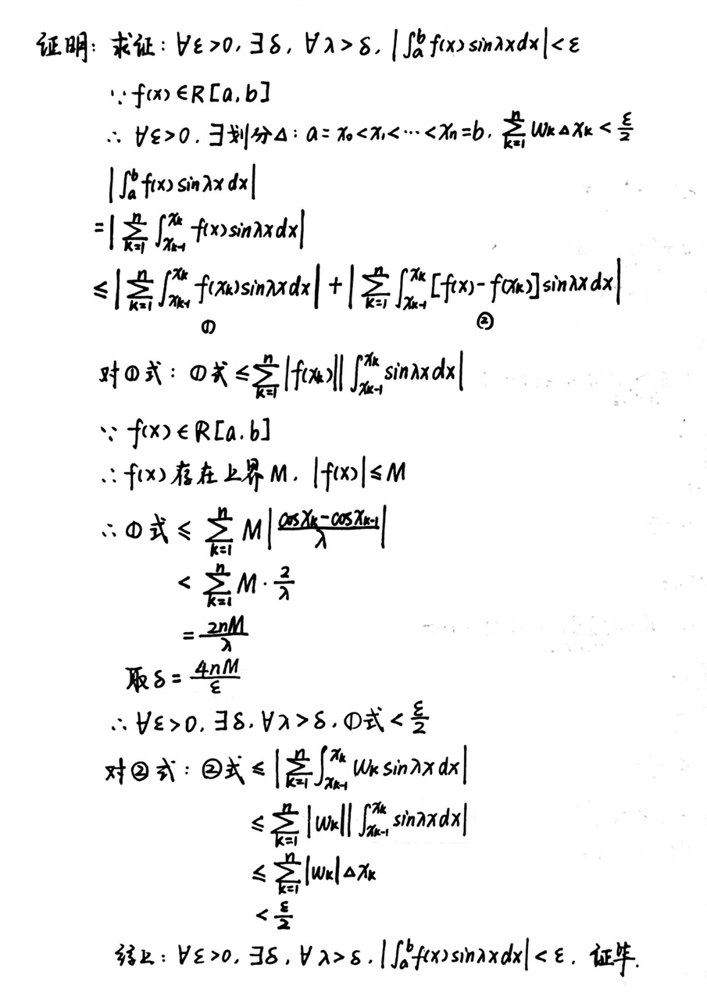
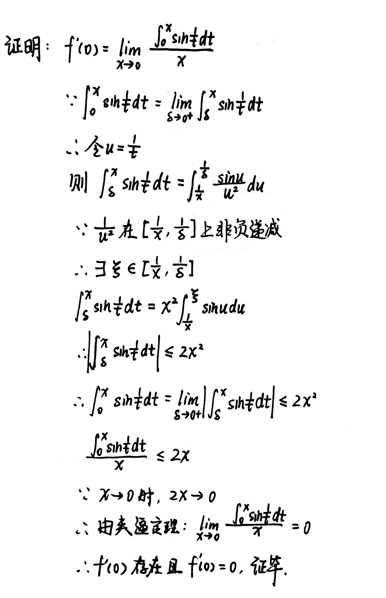

Chapter6 定积分
6.1 定积分的概念和可积条件
定积分的定义
设$f(x)$在$[a,b]$上有界，取划分
$$\Delta:a=x_0<x_1<x_2<···<x_n=b$$
在每个小区间$[x_i,x_{i+1}]$中任取点$\xi_i$，令$||\Delta||$为小区间长度的最大值，若当$||\Delta||\rightarrow 0$时，极限
$$\lim\limits_{||\Delta||\rightarrow 0}\sum\limits_{i=1}^{n}f(\xi_i)\Delta x_i$$
存在，且与$\Delta$的划分和$\xi_i$的取法无关，则称$f(x)$在$[a,b]$上Riemann可积，上述极限值称为$f(x)$在$[a,b]$上的定积分.
加细分割/合并分割
设$\Delta_1,\Delta_2$是$[a,b]$的两个分割。
若$\Delta_1$的分点全是$\Delta_2$的分点，则称$\Delta_2$是$\Delta_1$的加细分割，记作$\Delta_1\subset \Delta_2$。
若$\Delta^{*}$是合并$\Delta_1$和$\Delta_2$的全体分点而形成的分割，则称$\Delta^{*}$为$\Delta_1$与$\Delta_2$的合并分割，记作$\Delta^{*}=\Delta_1\cup\Delta_2$。
上和/下和
记$f(x)$在每段小区间上的上确界为$M_i$，下确界为$m_i$，则
$$\overline{S_{\Delta}}=\sum\limits_{i=1}^{n}M_i\Delta x_i$$
记作Darboux上和（大和）。
$$\underline{S_{\Delta}}=\sum\limits_{i=1}^{n}m_i\Delta x_i$$
记作Darboux下和（小和）。
引理：大和不增，小和不减
设$\Delta_1,\Delta_2$是$[a,b]$的两个分割，若$\Delta_1\subset \Delta_2$，且$\Delta_2$仅比$\Delta_1$多一个分点，则
$$0\leqslant \overline{S_{\Delta_{1}}}-\overline{S_{\Delta_{2}}}\leqslant ||\Delta_1||(M-m)$$
$$0\leqslant \underline{S_{\Delta_{2}}}-\underline{S_{\Delta_{1}}}\leqslant ||\Delta_1||(M-m)$$
Proof

推论1：
若$\Delta_2$是$\Delta_1$添加$k$个新分点后形成的分割，则
$$0\leqslant \overline{S_{\Delta_{1}}}-\overline{S_{\Delta_{2}}}\leqslant k||\Delta_1||(M-m)$$
$$0\leqslant \underline{S_{\Delta_{2}}}-\underline{S_{\Delta_{1}}}\leqslant k||\Delta_1||(M-m)$$
推论2：
设$\Delta_1,\Delta_2$是$[a,b]$的任意两个分割，则
$$\underline{S_{\Delta_1}}\leqslant \overline{S_{\Delta_2}}$$
上和一定大于下和。
上积分/下积分
对$[a,b]$的任意分割做相应的上和数集$\{\overline{S_\Delta}\}$与下和数集$\{\underline{S_\Delta}\}$，则上和数集的下确界为上积分，记作$\overline{A}$.下和数集的上确界为下积分，记作$\overline{A}$。
Darboux定理
$$\lim\limits_{||\Delta||\rightarrow 0}\overline{S_\Delta}=\overline{A}$$
$$\lim\limits_{||\Delta||\rightarrow 0}\underline{S_\Delta}=\underline{A}$$
Proof

可积的充要条件
1: 上积分和下积分相等，即
$$\overline{A}=\underline{A}$$
Proof

2: $\forall \varepsilon>0,\exists \delta>0,\forall \Delta$满足$||\Delta||<\delta$，有$\overline{S_\Delta}-\underline{S_\Delta}<\varepsilon$。
3: $\forall \varepsilon>0,\exists \Delta,\overline{S_\Delta}-\underline{S_\Delta}=\sum\limits_{i=1}^{n}\omega_i\Delta x_i<\varepsilon$。其中$\omega_i=M_i-m_i$为该区间上的振幅。
4: $\forall \varepsilon>0,\forall \sigma >0,\exists \Delta :a=x_0<x_1<···<x_n=b$，其相应于$\omega_i\geqslant \varepsilon$的子区间$\Delta x_i$的长度总和小于$\sigma$。
Proof

6.2 定积分的基本性质
定积分的五个性质
1.线性性：
设$f(x),g(x)\in R[a,b],k_1,k_2$为常数。则$k_1f(x)+k_2g(x)\in R[a,b]$，且有
$$\int_a^b[k_1f(x)+k_2g(x)]dx=k_1\int_a^bf(x)dx+k_2\int_a^bg(x)dx$$
2.乘积可积性：
设$f(x),g(x)\in R[a,b]$，则$f(x)·g(x)\in R[a,b]$
3.保序性：
设$f(x),g(x)\in R[a,b]$，且在$[a,b]$上恒有$f(x)\geqslant g(x)$，则有
$$\int_a^bf(x)dx\geqslant\int_a^b g(x)dx$$
4.绝对可积性：
设$f(x)\in R[a,b]$，则$|f(x)|\in R[a,b]$，且有
$$|\int_a^b f(x)dx|\leqslant \int_a^b|f(x)|dx$$
5.区间可加性：
设$f(x)\in R[a,b]$，则对任意点$c\in[a,b],f(x)\in R[a,c],f(x)\in R[c,b]$，反过来也成立，即有
$$\int_a^b f(x)dx=\int_a^c f(x)dx+\int_c^b f(x)dx$$
阶梯逼近
设$f(x)\in R[a,b],\forall \varepsilon >0$
(1)$\exists [a,b]$上的阶梯函数$h(x),\int_a^b|f(x)-h(x)|dx<\varepsilon$
(2)$\exists [a,b]$上的连续函数$g(x),\int_a^b |f(x)-g(x)|dx<\varepsilon$
6.3 微积分基本定理
Newton-Leibniz公式
若$f(x)\in R[a,b]$，$F(x)$是$f(x)$在$[a,b]$上的一个原函数，则成立
$$\int_a^b f(x)dx=F(b)-F(a)=F(x)|_a^b$$
Cauchy-Schwarz不等式
若$f(x),g(x)\in R[a,b]$，则有
$$(\int_a^b|f(x)g(x)|dx)^2\leqslant\int_a^bf^2(x)dx·\int_a^bg^2(x)dx$$
Proof

Riemann-Lebesque引理
若$f(x)\in R[a,b]$，则有
$$\lim\limits_{\lambda\rightarrow +\infty}\int_a^bf(x)\sin\lambda xdx=0$$
Proof

变限积分
设$f\in R[a,b]$，则$\forall x\in [a,b],f(t)\in R[a,x]$，称
$$F(x)=\int_a^x f(t)dt$$
为$f$在$[a,b]$上的变上限积分，$F(x)$的导数即为$f(x)$。(同样可定义变下限积分)
$$[\int_{\phi(x)}^{\psi(x)}f(t)dt]'=f(\psi(x))\psi'(x)-f(\phi(x))\phi'(x)$$
换元积分法
设$f(x)\in C[a,b],x=\phi(t)\in C^1[\alpha,\beta],\phi(\alpha)=a,\phi(\beta)=b$，则
$$\int_a^bf(x)dx=\int_\alpha^\beta f(\phi(t))\phi'(t)dt$$
条件可减弱为：$f(x)\in R[a,b],\phi'(t)\in R[\alpha,\beta]$
分部积分法
设$u(x),v(x)\in C^1[a,b]$，则
$$\int_a^bu(x)v'(x)dx=[u(x)v(x)]|_a^b-\int_a^bv(x)u'(x)dx$$
条件可减弱为：$u(x),v(x)\in R[a,b]$
Wallis公式
$$\lim\limits_{n\rightarrow \infty}[\frac{(2n)!}{(2n-1)!!}]^2·\frac{1}{2n+1}=\frac{\pi}{2}$$
Stirling公式
$$n!\sim\sqrt{2n\pi}(\frac{n}{e})^n,~(n\rightarrow \infty)$$
6.4 积分中值定理
积分第一中值定理
设$g(x)\in R[a,b]$且函数值不变号。
(1) 若$f(x)\in R[a,b],m=\inf f(x),M=\sup f(x)$，则存在$\eta\in [m,M]$，使得
$$\int_a^bf(x)g(x)dx=\eta\int_a^bg(x)dx$$
(2) 若$f(x)\in C[a,b]$，则存在$\xi \in[a,b]$，使得
$$\int_a^bf(x)g(x)dx=f(\xi)\int_a^bg(x)dx$$
Example
例1：设$f(x)\in C^2[-1,1],f(0)=0$，求证：$\exists\xi\in[-1,1]$，使得$f''(\xi)=3\int_{-1}^{1}f(x)dx$。

Example
例2：设$f(x)\in C[0,\pi],\int_0^{\pi} f(x)dx=0,\int_0^{\pi}f(x)cosxdx=0$，求证：$\exists\xi_1,\xi_2\in(0,\pi)$，使得$f(\xi_1)=f(\xi_2)=0$。

积分第二中值定理
设$g(x)\in R[a,b]$
Bonnet型：
(1) 若$f(x)$是$[a,b]$上的非负递减函数，则存在$\xi \in [a,b]$，使得
$$\int_a^bf(x)g(x)dx=f(a)\int_a^{\xi}g(x)dx$$
(2) 若$f(x)$是$[a,b]$上的非负递增函数，则存在$\xi \in [a,b]$，使得
$$\int_a^bf(x)g(x)dx=f(b)\int_{\xi}^bg(x)dx$$
Weierstrass型：
若$f(x)$在$[a,b]$上单调，则存在$\xi\in[a,b]$，使得
$$\int_a^bf(x)g(x)dx=f(a)\int_a^{\xi}g(x)dx+f(b)\int_{\xi}^bg(x)dx$$
Example
例1：设$f(x)\in D[a,b]$，且$f'(x)$单调递减，$f'(b)\geqslant m>0$，求证：$|\int_a^b\cos f(x)dx|\leqslant \frac{2}{m}$。

Example
例2：设$f(x)=\begin{cases} \int_0^x\sin\frac{1}{t}dt,~~~x\neq 0\\ 0,~~~~~~~~~~~~~~~~~~x=0 \end{cases}$ 求证：$f(x)$在0处可导，且$f'(0)=0$。

Abel变换
设有两组数$\{a_k\},\{b_k\},A_k=\sum\limits_{i=1}^ka_i$，则
$$\sum\limits_{k=1}^na_kb_k=\sum\limits_{k=1}^{n-1}(b_k-b_{k+1})A_k+A_nb_n$$
6.5 定积分在几何计算中的应用
面积、弧长与体积

曲率
平均曲率：
$$\overline{K}=|\frac{\Delta \phi}{\Delta s}|$$
其中$\Delta \phi$是$A,B$两点切线的夹角，$\Delta s$是$A,B$两点之间的弧长。
曲率：
$$K=\lim\limits_{\Delta a\rightarrow 0}|\frac{\Delta \phi}{\Delta s}|=|\frac{d\phi}{ds}|$$
曲率半径：
$$R=\frac{1}{K}$$
参数方程的曲率：
设参数方程
$$\begin{cases}
x=x(t)\\
y=y(t)
\end{cases}$$
$$K=\frac{|x'(t)y''(t)-x''(t)y'(t)|}{(x'^2(t)+y'^2(t))^{\frac{3}{2}}}$$